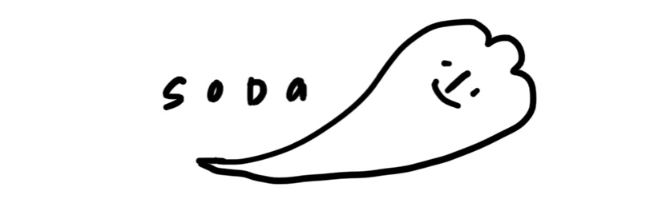
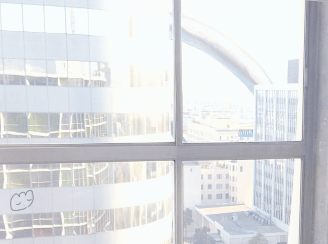

 ./works/air [back]about... air (Procreate,2022) this was my first proper animation i've ever done. i took a lot of inspiration from ph4_18c for this one. i've been a huge fan of their works for a while now and i've wanted to draw on top of photographs. i never got around to doing it because i thought that whatever i'd draw on top would look out of place and unnecessary. i found this picture on pinterest (original included an interior of an apartment) and eventually i've found that i only really liked the window.